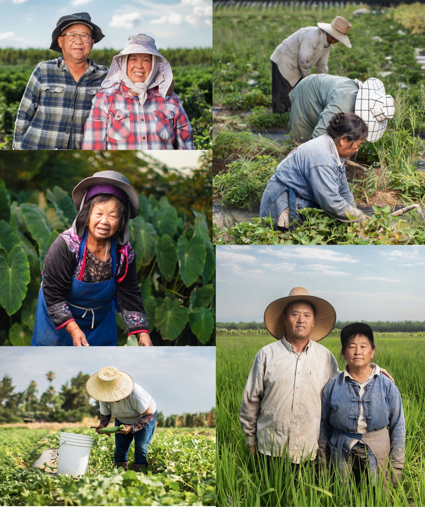

// END-TO-END · E-COMMERCE · ACCESSIBILITY
ABIRC Marketplace
Asian Business Institute & Resource Center — Sole UX Designer
I designed and launched ABIRC's first online marketplace — giving local Asian-owned farmers new visibility and buyers a way to order directly. I owned it end to end: research, usability testing, user flows, wireframes, and a maintainable content system, shipped on a Squarespace budget with no design or dev support after launch.
Read the case study →